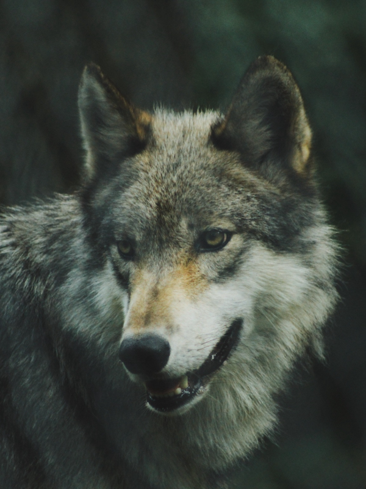

Animais Fantásticos





Raposa
As raposas são animais mamíferos e onívoros pertencentes à família Canidae. São vulpídeos de porte médio, caracterizados por um focinho comprido e uma cauda longa e peluda.
Também apresentam como particularidade suas pupilas ovais, semelhantes às pupilas verticais dos felídeos.
De cerca de 40 espécies reconhecidas como raposas, somente 12 pertencem ao gênero Vulpes das "raposas verdadeiras", do qual a raposa vermelha é a mais comum.
Também apresentam como particularidade suas pupilas ovais, semelhantes às pupilas verticais dos felídeos.
Esquilo
Os esquilos são pequenos mamíferos da família Sciuridae, conhecidos por sua agilidade e habilidade em subir em árvores. São animais onívoros, que se alimentam principalmente de sementes, frutas e insetos.
Conhecidos por sua capacidade de armazenar alimentos para o inverno, especialmente durante o período de outono.
Existem várias espécies de esquilos, incluindo o esquilo-orelha-vermelha e o esquilo-cinzento, que são encontrados em diferentes habitats.
São animais sociais e vivem em grupos, geralmente composto por uma fêmea e seus filhotes.
Urso
Os ursos são mamíferos carnívoros da família Ursidae. São animais robustos, com pelagem espessa e garras afiadas. Existem várias espécies de ursos, como o urso-polar, o urso-branco e o urso-negro.
Conhecidos por sua força e habilidade em caçar presas, além de serem onívoros, se alimentando de frutas, peixes e outros animais.
Animais solitários e territoriais, geralmente vivendo sozinhos exceto durante a época de acasalamento ou quando uma fêmea está com filhotes.
São animais importantes para o ecossistema e muitas vezes são considerados espécies-chave em suas áreas de distribuição.
Lobo
Os lobos são caninos selvagens da família Canidae. São animais sociais e inteligentes, conhecidos por sua cooperação em grupo e habilidade em caçar presas.
Vivem em ninhos chamados "alcovas" e são conhecidos por seu canto característico, que serve para comunicação e marcação de território.
Existem várias espécies de lobos, incluindo o lobo-cinzento e o lobo-vermelho, que são encontrados em diferentes habitats.
São animais importantes para o ecossistema e ajudam a manter o equilíbrio entre as populações de presas e predadores.
Macaco
Os macacos são primatas da família Cebidae, conhecidos por sua inteligência e habilidade em resolver problemas. São animais altamente sociais e vivem em grupos complexos.
Onívoros e se alimentam de frutas, folhas, insetos e pequenos vertebrados.
Existem várias espécies de macacos, incluindo o macaco-aranha e o macaco-rabudo, que são encontrados em diferentes habitats.
São animais importantes para o ecossistema e ajudam na dispersão de sementes e no controle de populações de insetos.
Leão
Os leões são felinos da família Felidae, conhecidos por sua força e majestade. São animais sociais que vivem em grupos chamados "manadas".
Predadores apex e desempenham um papel importante no ecossistema, ajudando a controlar as populações de presas.
Existem várias subespécies de leões, incluindo o leão-africano e o leão-asiano, que são encontrados em diferentes habitats.
São animais importantes para o ecossistema e muitas vezes são considerados espécies-chave em suas áreas de distribuição.